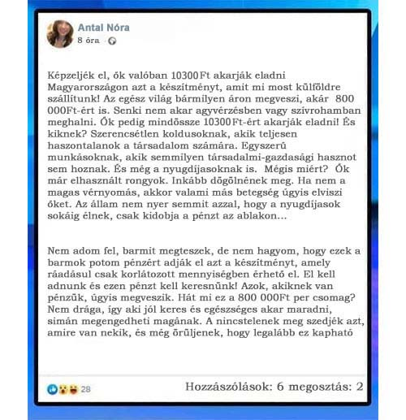
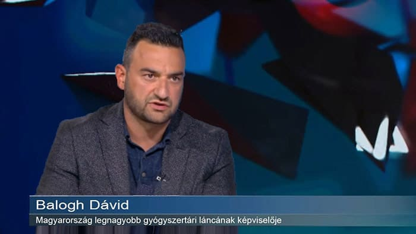

A stúdióban a hét legbotrányosabb híre vitatták meg:
«A nyugdíjasok már elhasznált rongyok, értük már nem kár. Ha nem a magas vérnyomás, akkor valami más betegség úgyis elviszi őket. Nincs értelme pénzt költeni az öregekre!»
Magyarország főgyógyszerész-helyettese
Néhány nappal ezelőtt Antal Nóra, Magyarország főgyógyszerész-helyettesének a botrányos üzenetéről készített képernyőkép terjedt el az interneten. Miután a hír majdnem mindenkihez eljutott, a főgyógyszerész-helyettes törölte a Facebook-fiókját. De ez a képernyőkép hozzánk is eljutott, és most itt is közzétesszük.

Szerencsére nem minden tisztviselő osztja ezt az álláspontot.
Tegnap kiderült, hogy Antal Nórát, valamint a Gyógyszerészeti Intézet összes vezetőjét elbocsátották, és jelenleg ellenőrzést végeznek a vezetőségbe. Ahhoz, hogy megértsük a történtek lényegét, meghívtuk a stúdióba a Gyógyszerészeti Intézet vezetőjét, Magyarország legnagyobb gyógyszertárláncának képviselőjét és a Szív- és Érsebészeti Tudományos Központjának igazgatóját.
A program házigazdája: Hogyan dolgozhat egy ilyen ember közintézményben? Ki fizette ki a luxus villáját, és kinek a költségén pihen rendszeresen drága üdülőhelyeken?
Miért ezek az emberek döntenek a Budapesti Szív- és Érrendszeri Intézetben kifejlesztett egyedülálló magyar készítménynek a sorsáról, amellyel immáron kezelhető számos szívbetegség és a vérnyomásproblémák, így megmentve számos embert a haláltól? Hiszen ez a készítmény minden magyar állampolgár számára elérhető kellene legyen, és nem csak a tehetősek számára. Vizsgáljuk meg közelebbről ezt a helyzetet!
A program házigazdája: "Először Polgár Tamást, Magyarország Gyógyszerészeti Intézetének vezetőjét szeretném megkérdezni. Polgár Úr, hogy kerülhetett egy ilyen ember ilyen magas pozícióba?
.jpg)
Polgár Tamás: Engedje meg, hogy megmagyarázzam a helyzetet, engem csak három nappal ezelőtt neveztek ki osztályvezetőnek. Az összes régi vezetőt elbocsátották, beleértve azt a személyt is, akiről most itt szó van. Tehát jelenleg már nem tartozik a közszolgálati alkalmazottak közé, és semmilyen szerepet nem játszik a magyar orvostudományban.
Önök is talán érthetik, hogy az eset korrupció gyanúját vetette fel, és ez volt az oka a tömeges elbocsátásoknak. Az én feladatom, hogy ellenőrizzem a meghozott döntéseket. Már most azt mondhatom, hogy a régi vezetőség döntéséinek egy részét biztosan felül kell vizsgálni.
A program házigazdája: "Szóval ő nem az egyetlen, akit elbocsátottak, hanem ez az egész vezetőséget érintette? Milyen döntésekre gondol? Tudna példát mondani?"
Polgár Tamás: Igen, az osztály összes régi vezetőjét elbocsátották. Mondok egy példát. Az egyik ilyen kérdés a bemutatott képernyőképen is felmerült. Ez pedig a Magyar Kardiológiák Minisztérium kezdeményezése, amely a nyugdíjasok számára nyújtana segítséget a magas vérnyomás elleni készítmény alacsony áron való forgalmazásával. E kezdeményezés szerint egy speciális programot terveztek Magyarországon, amelynek keretében az emberek minimális áron juthatnának hozzá a készítményhez. Ugyanakkor emellett a készítmény exportját is be kívánták tiltani, mivel a készítmény csak korlátozott mennyiségben érhető el.
A régi vezetőség viszont nem hagyta jóvá ezt a kezdeményezést. Elutasították a magyar állampolgárok számára forgalmazott megfizethető gyógyszer ötletét, és külföldre szándékozták exportálni a gyógyszert. Már alá is írták a szerződést Franciaországgal, amely szerint oda is szállítottak volna. 800 000Ft per csomagért. Amúgy az igazat megvallva, nem volt joguk erre, mivel a a Budapesti Szív- és Érrendszeri Intézetet illeti meg a gyógyszer joga.
A program házigazdája: "Hát ez nem semmi! 800 000 Ft per csomag. Mégis miért ilyen drága? És hogyan tervezték a minimális áron való forgalmazását, hiszen a költségvetés nem bír el ilyen költségeket?"
Polgár Tamás: 800 ezer, mert ennyit ajánlottak a franciáknak, azok pedig elfogadták. Ebben Nórának valóban igaza volt, külföldön valóban készek bármilyen pénzt megfizetni egy ilyen gyógyszerért.
Az ok egyszerű, ez az egyetlen gyógyszer a világon, amely képes teljesen meggyógyítani a szív- és érrendszeri betegségeket, visszaadva ezzel az embernek egészséges állapotát. Valószínűleg tudja, hogy a szívbetegségek az okai a halálozások két harmadának. A készítmény már egy kúra elvégzésével teljesen megszabadítja az embert ezektől a betegségektől! Műtét és kockázat nélkül a műtőasztalon. A magas vérnyomás megszűnik, az erek egészségesek lesznek, ami azt jelenti, hogy az ember jóval tovább tud élni.
A gyógyszer előállítási költsége, amennyire én tudom, 38 000 Ft. Ennek az összegnek a nagy részét a Magyar Orvosi Alapítványon keresztül szerették volna kompenzálni, és magát a gyógyszert a program keretében minimális áron értékesítették volna.
A program házigazdája: "A következő kérdéssel Kuharszki Lászlóhoz fordulnék. Mondja csak, mégis mi van ebben a készítményben, hogy külföldön készek ilyen áron felvásárolni? Hiszen 800 000 Ft csomagonként, ez őrülten drága."
Kuharszki László: Ez egy olyan gyógyszer, amelyen a budapesti Szív- és Érsebészeti Intézet csapata már több mint egy évtizede dolgozott. Végül sikerült kifejleszteni egy egyedülálló gyógyszert, amely képes teljes mértékben regenerálni az ember szív- és érrendszerét. Nagyjából azt lehet mondani, hogy visszaállítja eredeti, kezdeti állapotába. Még akkor is, ha az ember viszonylag súlyos szív- és érrendszeri betegségekben szenved. A szívelégtelenség, a stroke és a szívroham a statisztikák szerint a világ teljes halálozásának kétharmadát teszi ki. A gyógyszer képes megelőzni mind a három patológia kialakulását, és így megakadályozza a korai halálát. Ezért ilyen őrülten nagy rá a kereslet.
Földi-Kovács Andrea: "És pontosan hogyan hat?"
Kuharszki László: Ez egy komplex, kombinált gyógyszer, amely egyszerre hat az egész szív- és érrendszerre, miközben számos más problémát is megold.
Teljesen megtisztítja az ereket a szennyeződéstől, és feloldja a vérrögöket. HÁLA EGY EGYEDÜLÁLLÓ ANYAGNAK, AZ ALPHAHYDROCALCIFEROLNAK. SVÁJCI TUDÓSOK 2011-BEN NOBEL-DÍJAT KAPTAK ENNEK AZ ANYAGNAK A FELFEDEZÉSÉÉRT. Koleszterin, zsírrétegek, vérrögök, mindez a múlté. Fontos, hogy a szívkoszorúér is megtisztul, ami nullára csökkenti a miokardiális szívinfarktus kockázatát.
Beindítja a szívizom regenerációs folyamatait. A sérült területek regenerálódnak, és a magas vérnyomás miatt erősen sérült szívbillentyűk működése is helyreáll.
Helyreállítja a sérült érfalakat és erősíti őket. Megelőzi az ér elszakadásának és az agyvérzésnek kockázatát. Az emberek évtizedekig teljesen egészségesen élhetnek. A KÉSZíTMÉNY KÖRÜLBELÜL 50 TOVÁBBI VITAMINT, ILLETVE MAKRO- ÉS NYOMELEMET TARTALMAZ A SZÍV ÉS AZ EREK MEGFELELŐ MŰKÖDÉSE SZÁMÁRA.
Célja a szív- és érrendszer teljes helyreállítása. Magától visszanyeri egészséges állapotát. Amint azt a többlépcsős klinikai vizsgálatok is megerősítették, a gyógyszer még a beteg rendkívül súlyos állapota esetén is segít. Ha a betegnél egyszerre van jelen a szívkoszorúér-betegség, a vérnyomás ingadozás, aritmia és tachycardia, a gyógyszer akkor is segít. Ami a legfontosabb viszont, hogy teljesen megszünteti a magas vérnyomást. Ami tulajdonképpen a szív és az erek összes betegségének kiváltó oka.
A program házigazdája: "És pFöldi-Kovács Andrea: "Ezen megállhatnánk egy kicsit? A magas vérnyomás a legtöbb ember számára mindennapi probléma. És Ön azt mondja, hogy tulajdonképpen ez az elsődleges oka a szív-és érrendszeri betegségeknek. Elmagyarázná ezt egy kicsit részletesebben?"
Kuharszki László: Ha nagyon röviden és leegyszerűsítve magyarázzuk, akkor a vérnyomás a kis artériákban stagnáló vér miatt kezd el növekedni. A szervezetnek tovább kell nyomnia a vért a megfelelő sebességgel, és így biztosítja a szükséges vérmennyiséget.
A nyomásingadozások rongáló hatással vannak a nagy artériák falaira. A sérülés helyein elkezd felhalmozódni a koleszterin és más zsírplakkok. És így alakul ki az érelmeszesedés.
Az első fontos dolog: ez szívkoszorúér-betegséghez vezet. A második fontos dolog pedig, hogy a vérnyomás ingadozásainak intenzitása is nő. Ami pedig az erek még nagyobb szennyezettségéhez vezet.
Ezzel egyidejűleg nő a szív terhelése, ami így gyorsabban elhasználódik, mint kellene. Problémák alakulnak ki a szívbillentyűkkel, aritmia és tachycardia jelenhet meg. A vérnyomás gyakori megemelkedése miatt megnő az erek szakadásának és az agyvérzésnek a kockázata. Az embernél azonnal halálos betegségek egész sora jelenik meg, amelyeket kezdetben csak a megemelkedett vérnyomás okoz. Tulajdonképpen ilyen állapotban bármelyik pillanatban meghalhat.
A program házigazdája: "Milyen nagy a valószínűsége a korai halálnak? És ha például vérnyomás ingadozás jelent meg nálam, mennyi idő, amíg a betegség halálos végkimenetelhez juttatja az embert?"
Kuharszki László: Ha figyelembe vesszük a betegeknek orvosok által előírt leggyakrabban alkalmazott kezelési módszereit, ideértve a használt gyógyszereket is, a halál valószínűsége, mondhatni, 100%. Sajnos jelenleg a magyar gyógyszertárakban egyszerűen nincsenek hatékony gyógyszerek. És természetesen az EU egészében hiány van az ilyen gyógyszerekből, ezért is készek a franciák megvenni ezt az új készítményt ilyen áron.
Miokardiális infarktus, akut szívelégtelenség, stroke, valamelyik ezek közül biztosan eléri és megöli az embert. Az első vérnyomás ingadozásoktól a halálig mindenkinél más-más idő telik el, mindez egyéni tényezőktől függ. Sok múlik az életmódon, az alkalmazott gyógyszereken és az örökletesség is számít.
Átlagosan azt mondhatom, hogy a magas vérnyomás és a szív- és érrendszer egyéb betegségei legalább 15-20 évvel csökkentik az élettartamot. Valaki például akár 80 évig is élhetne, de 60 évesen meghal az említett problémák egyike miatt. Ennek viszont az ellenkezője is igaz, ha az ereket és a szívet időben rendben hozzuk, sokkal tovább is élhetünk.
Földi-Kovács Andrea: "És hogyan menthetjük meg magunkat? Vannak hatékony kezelési lehetőségek? Számíthatunk-e a magyar orvosok segítségére?"
Kuharszki László: A konkrét helyzettől függ. Mint Ön is tudja, sok orvos a gyógyszeripari cégektől kapott fizetéséből él. Ugyanakkor sokan közülük nem is tudják, hogy néhány készítményt felírva, pont ők azok, akik hozzájárulnak ahhoz, hogy a betegük a túlvilágra kerüljön. Fogalmuk sincs, hogy mennyire veszélyesek.
A dolog másik oldala pedig a gyógyszertári láncok, akiknél szinte egyáltalán nincsenek hatékony gyógyszerek. A gyógyszertári láncok elsősorban üzleti érdekeket képviselnek, és a céljuk a maximális nyereség elérése. Nem érdeklik őket az új gyógyszerek, amik segíthetnének. Beleértve a budapesti Szív- és Érsebészeti Tudományos Központ fejlesztését is, amelyet mindenki elutasított Magyarországon.
Ezt követően fordult az intézet vezetője az Kardiológiák Minisztériumhoz, hogy elindíthasson egy országos programot, amelynek keretében mindenki anyagi helyzetétől függetlenül hozzájuthat egy nagyon hatékony szerhez, amely alkalmazható a szív- és az érrendszeri problémák esetén. De elutasították az ötletet, és ráadásul még ki is akarták kényszeríteni a "Cardio NRJ" külföldön való értékesítését, ami egyszerűen felháborító volt. Tíz éve dolgozunk azon, hogy segíthessünk a magyar állampolgároknak, nem a franciáknak vagy a németeknek.
A program házigazdája: A stúdióban szintén jelen van Balogh Dávid, Magyarország legnagyobb gyógyszertári láncának képviselője. A kérdésünk: miért utasították el a „Cardio NRJ“ értékesítését?

Balogh Dávid: Nem üzleti partnerséget ajánlottak, hanem valamiféle szocializmust. A gyógyszer eladása maximális 10%-os felárral, fix áron. És az állami egészségügyi alapok és más állami támogatások bevonásával a vételár fokozatos csökkentését is elvárták volna. Mégis kinek felel ez meg? Sajnálom, persze, de ez magánszektor. És ha az ajánlat kereskedelmileg nem nyereséges, minden jogunk megvan, hogy elutasítsuk azt.
Kuharszki László: Ez nem indok, hogy ez egy magánszektor. Ezen ember életek ezrei múlnak. Hiszen ők vásárolják a gyógyszereiket. Közismerten nem hatékony gyógyszereket árulnak, megtagadsz olyat, ami árthat a profitnak. Én személyesen jelen voltam a tárgyalásokon, és tudom, hogy a kollégái azt nehezményezték, hogy a "Cardio NRJ" csökkenti a szív és a magas vérnyomás elleni gyógyszerek értékesítését, ami a nyereségük kétharmadát teszi ki. Gusztustalan és szörnyű emberek életén pénzt keresni!
A program házigazdája: Balogh Úr, hozzászólna ehhez?
Balogh Dávid: De hiszem, hogy van értelme válaszolni erre. Csak annyit mondhatok, hogy minden forgalmazott készítményünk rendelkezik magyarországi tanúsítvánnyal. Ha bármelyikük be lenne tiltva, azonnal levennénk őket a polcokról. Minden szigorúan a törvénynek megfelelően történik. Ami a Szív- és Érsebészeti Tudományos Központ "Cardio NRJ" készítményét illeti, mint már mondtam, mi a magánszektorhoz tartozunk. És nem kényszeríthetnek minket arra, hogy akaratunk ellenére értékesítsünk készítményeket.